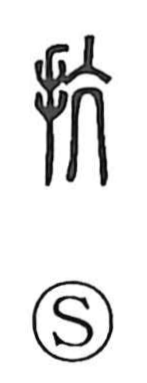

抗

Uncategorized
Kun: aragau | On: kou
to resist ・ to oppose ・ to fend off ・ to refuse
Explanation
抗 is a phono-semantic compound: the hand (扌) joins 亢 as the phonetic. Shirakawa explains 亢 as the figure of a human throat with the arteries standing out, a sign of heightened excitement or indignation—hence the fervent feeling in words like 慷慨. Set beside the hand, it evokes meeting something head-on and pushing back, which gives the senses of resisting, refusing, warding off, or striking against. Many graphs built on 亢 and read kō—such as 坑, 炕, and 杭—likewise carry a direct, forceful tone.